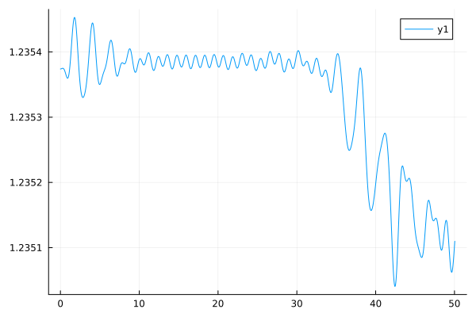

using Plots
using FFTW
using VectorSpin
function run()
T = 50 # 4000 # final time
nx = 65 # partition of x
nv = 129 # partition of v
vmin, vmax = -2.5, 2.5
ke = 1.2231333040331807
xmin, xmax = 0.0, 4pi / ke
dt = 0.04
nsteps = floor(Int, T / dt + 1.1)
a = 0.02 # 0.001; perturbation coefficient
h_int = 0.2 # hbar
k0 = 2.0 * ke
ww = sqrt(1.0 + k0^2.0) # w0
ata = 0.2
vth = 0.17
mesh = Mesh(xmin, xmax, nx, vmin, vmax, nv)
E1, E2, E3, A2, A3 = initialfields( mesh, a, ww, ke, k0)
f0, f1, f2, f3 = initialfunction(mesh, a, ke, vth, ata)
results = Diagnostics(f0, f2, f3, E1, E2, E3, A2, A3, mesh, h_int)
H2 = H2Subsystem(mesh)
He = HeSubsystem(mesh)
HA = HASubsystem(mesh)
H3 = H3Subsystem(mesh)
Hp = HpSubsystem(mesh)
for i = 1:nsteps # Loop over time
step!(H2, f0, f1, f2, f3, E3, A3, 0.5dt, h_int)
step!(He, f0, f1, f2, f3, E1, E2, E3, A2, A3, 0.5dt)
step!(HA, f0, f1, f2, f3, E2, E3, A2, A3, 0.5dt)
step!(H3, f0, f1, f2, f3, E2, A2, 0.5dt, h_int)
step!(Hp, f0, f1, f2, f3, E1, dt)
step!(H3, f0, f1, f2, f3, E2, A2, 0.5dt, h_int)
step!(HA, f0, f1, f2, f3, E2, E3, A2, A3, 0.5dt)
step!(He, f0, f1, f2, f3, E1, E2, E3, A2, A3, 0.5dt)
step!(H2, f0, f1, f2, f3, E3, A3, 0.5dt, h_int)
save!(results, i*dt, f0, f2, f3, E1, E2, E3, A2, A3)
end
results
end
run (generic function with 1 method)
data = run()
Diagnostics(Mesh{Float64}(129, 65, -2.5, 2.5, 0.0, 10.273917465024137, [0.0, 0.6115666520165903, 1.2231333040331807, 1.834699956049771, 2.4462666080663613, 3.0578332600829516, 3.669399912099542, 4.280966564116133, 4.892533216132723, 5.5040998681493125 … -6.115666520165903, -5.5040998681493125, -4.892533216132723, -4.280966564116133, -3.669399912099542, -3.0578332600829516, -2.4462666080663613, -1.834699956049771, -1.2231333040331807, -0.6115666520165903], 0.15806026869267903, 0.03875968992248062, [0.0, 0.15806026869267906, 0.3161205373853581, 0.47418080607803714, 0.6322410747707162, 0.7903013434633953, 0.9483616121560743, 1.1064218808487534, 1.2644821495414325, 1.4225424182341115 … 8.693314778097347, 8.851375046790027, 9.009435315482706, 9.167495584175386, 9.325555852868064, 9.483616121560743, 9.641676390253423, 9.799736658946102, 9.95779692763878, 10.11585719633146], [-2.4612403100775193, -2.4224806201550386, -2.383720930232558, -2.3449612403100772, -2.306201550387597, -2.2674418604651163, -2.2286821705426356, -2.189922480620155, -2.1511627906976742, -2.1124031007751936 … 2.1511627906976742, 2.189922480620155, 2.2286821705426356, 2.2674418604651163, 2.306201550387597, 2.3449612403100777, 2.383720930232558, 2.4224806201550386, 2.4612403100775193, 2.5], [-2.4806201550387597, -2.441860465116279, -2.4031007751937983, -2.3643410852713176, -2.3255813953488373, -2.2868217054263567, -2.248062015503876, -2.2093023255813953, -2.1705426356589146, -2.131782945736434 … 2.131782945736434, 2.1705426356589146, 2.2093023255813953, 2.248062015503876, 2.2868217054263567, 2.3255813953488373, 2.3643410852713176, 2.4031007751937983, 2.441860465116279, 2.4806201550387597]), 0.2, [0.0006867339048040479, 0.0006855815006367277, 0.0006821341543513193, 0.0006764213443288355, 0.000668491802495048, 0.0006584129238580486, 0.0006462699548837981, 0.0006321649753168364, 0.0006162156916429375, 0.0005985540635600162 … 0.0008127101068379662, 0.0008031455270507082, 0.0007938876517252199, 0.0007849487176369444, 0.0007763391666519824, 0.0007680661594787246, 0.000760135133903458, 0.000752549676657383, 0.0007453124013049965, 0.0007384259663685906], [0.5434797242199628, 0.5434952965246257, 0.5435392892412116, 0.5436036781069666, 0.5436755766981636, 0.5437379429846713, 0.5437705207359453, 0.54375097066741, 0.5436561369891374, 0.543463388304642 … 0.526193205084504, 0.5267837624258621, 0.5275502819818902, 0.5284510945170748, 0.5294380341078129, 0.5304586345048958, 0.5314585163557333, 0.5323838522826247, 0.533183804958853, 0.5338128334329739], [0.46507594165098376, 0.46506153425426455, 0.46501951350534854, 0.46495338532419983, 0.46486867035408597, 0.46477243895556203, 0.4646726969091194, 0.4645776563733256, 0.46449493353816507, 0.4644307192669572 … 0.4485511770653954, 0.44752245511647654, 0.44635132940350875, 0.44507738106528827, 0.443745706056073, 0.44240499547130147, 0.44110545438926546, 0.43989665105358833, 0.43882538918606584, 0.43793369367007606], [1.2353739321360409, 1.2353739742776206, 1.2353740951204788, 1.23537427828243, 1.23537449765262, 1.2353747191160047, 1.2353749028413883, 1.2353750060140936, 1.2353749858703142, 1.2353748028731493 … 1.2350626678656966, 1.235064438853641, 1.2350674272393283, 1.235071523813951, 1.2350765848323064, 1.2350824381886707, 1.235088891092081, 1.2350957371689948, 1.2351027651265678, 1.235109766089534], [0.6849278310016093, 0.6849030986027209, 0.6848291903706611, 0.6847069690805674, 0.6845378590383357, 0.6843238258672114, 0.6840673487353572, 0.6837713855393989, 0.6834393316892697, 0.6830749732569018 … 0.35652848382473423, 0.3557018753425776, 0.35487799875023734, 0.3540561869523432, 0.35323574399766083, 0.35241596189392593, 0.3515961369021284, 0.35077558481908977, 0.34995365486899677, 0.3491297419606067], [[0.029605696652845393, 0.02959488193923368, 0.02956284075189939, 0.029510766937399287, 0.02944060075292454, 0.029354956572807206, 0.02925702547759226, 0.029150456355181473, 0.02903921994419072, 0.02892746088523095 … 0.02881934329264454, 0.02892746088523095, 0.02903921994419073, 0.029150456355181473, 0.02925702547759226, 0.029354956572807206, 0.02944060075292454, 0.029510766937399287, 0.02956284075189939, 0.02959488193923368], [0.02961426270803642, 0.02960370383423769, 0.02957229777628188, 0.02952111725402461, 0.029451941881881164, 0.0293672238851532, 0.029270024275405725, 0.029163914636458475, 0.029052845441494883, 0.028940988688979714 … 0.028832717026976453, 0.02894109529549633, 0.02905289294910413, 0.029163893378682495, 0.029269934107736664, 0.02936707662193316, 0.02945176138575966, 0.029520936208034216, 0.029572151416045418, 0.02960362205607699], [0.029639838446929693, 0.029630137937318703, 0.029600697590483664, 0.029552213403958652, 0.0294859822364389, 0.029403980305045933, 0.02930889559279285, 0.029204085797753677, 0.02909345433822708, 0.028981262407656323 … 0.028872873099665495, 0.028981995884971197, 0.029093849526439466, 0.029204064448057253, 0.029308435871016128, 0.029403138869814625, 0.029484900308426803, 0.029551098405375238, 0.029599781372738245, 0.029629621393097546], [0.029682058832398196, 0.02967397965357366, 0.02964793693904434, 0.029603975528060877, 0.02954258901170174, 0.02946498255565366, 0.02937325654690565, 0.0292704470863474, 0.029160405914567287, 0.029047558026162327 … 0.02893970179217151, 0.029049953924487153, 0.029161744975531284, 0.02927046649132885, 0.029371871828628347, 0.029462362488255713, 0.029539178451838042, 0.02960043790571451, 0.029645019176329314, 0.029672331433427887], [0.02974032287102871, 0.029734772184974764, 0.02971363454204507, 0.029676017930357602, 0.02962130111758723, 0.029549646889192555, 0.029462383260449358, 0.029362143954963626, 0.029252742903255892, 0.029138852748400643 … 0.02903280253733437, 0.029144451764080457, 0.029255909677033672, 0.02936226168852847, 0.0294592486890808, 0.029543644722151013, 0.029613457417123443, 0.029667866992135996, 0.029706905442569154, 0.02973096926090314], [0.029813804511727104, 0.029811813871488974, 0.0297971368430131, 0.029767655302936846, 0.02972133734516746, 0.029657059700929484, 0.029575223463991045, 0.029478003648411192, 0.029369205122811447, 0.029253838219717245 … 0.029151491078519363, 0.02926467057664079, 0.029375358389056243, 0.029478289580394206, 0.02956925460558075, 0.029645580276740257, 0.029706321172090287, 0.029752047700966962, 0.029784252419335164, 0.029804533037454606], [0.029901467547748733, 0.029904170151570066, 0.029897529064514424, 0.029877914768184476, 0.029841610519906494, 0.02978599393510875, 0.029710414423973715, 0.029616553596042382, 0.029508247522067522, 0.029390937943747485 … 0.029294810060536598, 0.029409501841683935, 0.0295188038011554, 0.02961708399437142, 0.029700280153652298, 0.029766485908787436, 0.029816102638744225, 0.02985141804831035, 0.0298756674604716, 0.029891821213314584], [0.030002084182083767, 0.03001068988246701, 0.030013651319815513, 0.03000555343931061, 0.029980747284261616, 0.02993493087961865, 0.029866305804745166, 0.029776044283433528, 0.029668062397881338, 0.029548328709070103 … 0.029461542755180637, 0.029577562308773318, 0.0296846740961806, 0.029776894473893555, 0.02985044405792884, 0.0299044296570746, 0.029940914512531554, 0.029964221946102553, 0.029979579778580245, 0.029991454982328924], [0.030114256835272888, 0.03013002564921011, 0.030144119394027658, 0.030149081055655915, 0.030137113010513437, 0.030102086821682857, 0.030040986973182013, 0.029954476194870704, 0.029846605468294072, 0.029723965754711514 … 0.029650229599736327, 0.02976721215319672, 0.02987113422002484, 0.029955711821739176, 0.03001762314412596, 0.030057264051893375, 0.030078683562739104, 0.030088542041967706, 0.03009426979322784, 0.030101903436604138], [0.030236442705278078, 0.030260657591524832, 0.030287349685619663, 0.030306787120839764, 0.03030884121853172, 0.030285443930006286, 0.030232318168399653, 0.03014963034551296, 0.03004162540565704, 0.029915611319195862 … 0.029859187213359412, 0.02997657601765372, 0.030076110515444947, 0.030151297303202502, 0.03019948591428806, 0.03022266256821551, 0.030227187596692035, 0.030222334670127783, 0.03021790035606458, 0.030221510835223054] … [0.024743156638347794, 0.020584790666414093, 0.016220387275660823, 0.016284167104164905, 0.020503713016333965, 0.02681424852649154, 0.03555399866774869, 0.046781327782289675, 0.05371804380227845, 0.056333091791612375 … 0.013845569831390491, 0.025807559823218938, 0.037721534276790814, 0.0331114336043488, 0.043980995130524975, 0.051078436074141524, 0.04845550442553005, 0.04832926000193135, 0.046147448310914316, 0.03363821548884815], [0.02245280180585444, 0.018114289685803232, 0.015374095809505668, 0.01651287877913525, 0.021949936394829537, 0.029372671502356368, 0.03953316118734796, 0.049554981534894016, 0.05523724744688331, 0.05718555046859531 … 0.015008155300396602, 0.03141135396703326, 0.03708857981450547, 0.03474096015535515, 0.04740658954249874, 0.05100464155491176, 0.04784777670529617, 0.04753752297571705, 0.0425891052483721, 0.028875939856880483], [0.020411711297130243, 0.016081860292961853, 0.015023411485119594, 0.017060160768283105, 0.02396482244060815, 0.03257370160331458, 0.04327894455523228, 0.05172060472905372, 0.05657368599653736, 0.057874129854856717 … 0.018433005131770597, 0.035779449727199576, 0.03595683244218009, 0.03771649355227298, 0.04987023216674258, 0.05055142677171949, 0.046990600059288214, 0.04626753837690876, 0.038037445055901425, 0.024794060242553772], [0.018468039213121814, 0.01470355040797998, 0.014923778608429097, 0.018126305118531746, 0.026576695099875605, 0.0361895564445971, 0.04644627462328034, 0.05349624074626057, 0.057683907177302776, 0.05840929874112221 … 0.023621609823668455, 0.03829874857686195, 0.03534811565450786, 0.04135755765280439, 0.05139686652802758, 0.04973513889207824, 0.04592529897820958, 0.04432067503755236, 0.03282543558225017, 0.021660292126925936], [0.016626620107918003, 0.013964509253666279, 0.015024122946302735, 0.01989525830533433, 0.0297046334397311, 0.039861626233888815, 0.048923801472105365, 0.05508240207584942, 0.05845575442202023, 0.05880989198365228 … 0.02942400649334705, 0.039099137783703775, 0.035896104719798885, 0.04496625719374277, 0.05214952808246179, 0.04849266947594256, 0.04476755642260969, 0.04141359572996911, 0.027557728087528755, 0.0194608377355522], [0.015007035226251434, 0.013684778402314699, 0.015481314337654513, 0.02242973642679188, 0.03317302932572004, 0.04321108119278316, 0.05083305159964713, 0.056524092582626646, 0.058836928063923356, 0.05902865651489558 … 0.03456921796310828, 0.03889787275887758, 0.037664550436114864, 0.04810324460868585, 0.0522127677139113, 0.04685462176366694, 0.04353132053681231, 0.0373949692990423, 0.022912499846273325, 0.017968790365344225], [0.013743529816113592, 0.013688463407813104, 0.01654988859907902, 0.025632338423243594, 0.03673306408029552, 0.04597500838621483, 0.05240748886881688, 0.05770296115428968, 0.05888254273393221, 0.05892257762496266 … 0.03822848008149643, 0.038589540327562434, 0.040293027649983, 0.05059564906280457, 0.051555567316359505, 0.04501668963273535, 0.041998556102363874, 0.032458986469652173, 0.019393163719538992, 0.016877467903692423], [0.012904284978310025, 0.013947575763485673, 0.01843929765332536, 0.02926024035293949, 0.040108768293372996, 0.048085901460244905, 0.05383742305441178, 0.05843225147831618, 0.058724488446796674, 0.058241233518637935 … 0.04028212511768563, 0.03882920640303148, 0.04331800357509857, 0.052354983386470905, 0.050165839718341494, 0.04323260892853652, 0.039788314309733265, 0.027168750939117324, 0.017187325465797487, 0.01591610468339702], [0.01247072614709009, 0.014626735711145453, 0.02118358469225047, 0.032997886540176276, 0.0430608462209162, 0.04965853442318817, 0.05515051425649247, 0.05861312216972843, 0.058450151036329785, 0.05672141710474342 … 0.04118325448282064, 0.03985263354839794, 0.04638675855918541, 0.05325043702310136, 0.048175560317592236, 0.04163130778422388, 0.03658720986656355, 0.022286736487738257, 0.016146544050674113, 0.014932937191083665], [0.012431557224304814, 0.01595020771559727, 0.024606145459333033, 0.03656912425993523, 0.04542931213436735, 0.050902844167383915, 0.05619932524115891, 0.058327067120844005, 0.05798369817728754, 0.054259281043057724 … 0.04161347124818079, 0.04155249748501089, 0.04926358270744501, 0.05314130068046339, 0.045875971216648145, 0.04008131982435789, 0.03240392218006482, 0.018499072717089927, 0.015879600532552086, 0.013902731366109505]], [0.0, 0.04, 0.08, 0.12, 0.16, 0.2, 0.24, 0.28, 0.32, 0.36 … 49.68, 49.72, 49.76, 49.800000000000004, 49.84, 49.88, 49.92, 49.96, 50.0, 50.04])
plot(data.time, log.(data.Ex_energy))
plot(data.time, data.E_energy)

plot(data.time, data.B_energy)
plot(data.time, data.energy)
plot(data.time, data.Sz)